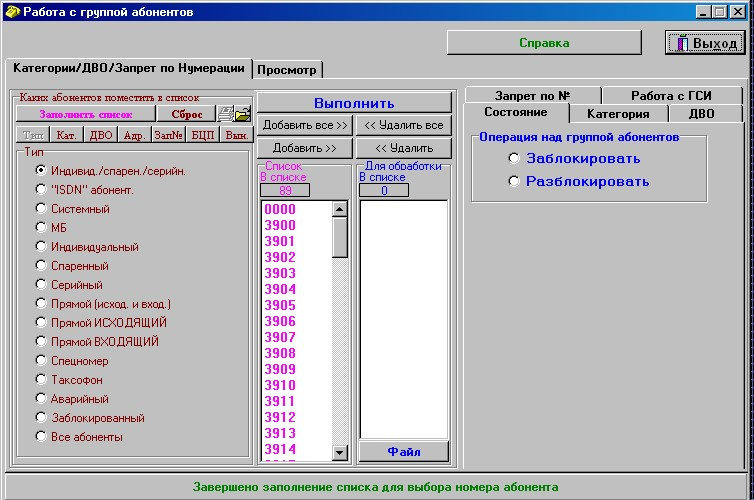

Эксплуатация оборудования аппаратной П-178МБ в основных режимах работы.
ТРЕБОВАНИЯ БЕЗОПАСНОСТИ
при эксплуатации аппаратуры связи
Эксплуатацию, техническое обслуживание и ремонт изделия производить в соответствии с “Правилами техники электробезопасности при эксплуатации военных электроустановок”.
К обслуживанию изделия и к управлению им во время работы допускаются лица, прошедшие теоретическую, практическую, специальную подготовку и имеющие квалификацию не ниже третьей группы по правилам техники электробезопасности.
Обслуживающий персонал изделия обязан знать правила оказания первой помощи пострадавшему при поражении электрическим током и отравлении угарным газом.
При перевозке людей в кузове экипаж должен быть проинструктирован о том, где каждый должен находиться, за что держаться и как пользоваться переговорным устройством, обеспечивающим служебную связь между кабиной и кузовом. Начальник, находящийся в кабине, обязан предупреждать экипаж о всех случаях приближения к плохим участкам дороги, когда возможна сильная тряска или резкое торможение автомобиля.
ПРИ ДВИЖЕНИИ ИЗДЕЛИЯ СТРОГО СОБЛЮДАТЬ ПРАВИЛА ДОРОЖНОГО ДВИЖЕНИЯ И ПРАВИЛА ЭКСПЛУАТАЦИИ АВТОМОБИЛЕЙ.
При движении изделия двери кузова, в случае отсутствия в кузове членов экипажа, должны быть закрыты на ключ.
КУРИТЬ И ПОЛЬЗОВАТЬСЯ ОТКРЫТЫМ ОГНЕМ В ИЗДЕЛИИ И ВБЛИЗИ НЕГО КАТЕГОРИЧЕСКИ ЗАПРЕЩАЕТСЯ.
Меры предосторожности при подключении к электросети
До подключения изделия к сети переменного тока необходимо:
- подготовить к работе защитно-отключающее устройство блока БКРЗ, для чего:
- забить один заземлитель на расстоянии до 5 м от изделия и соединить его с заземляющим проводом для подключения его к клемме “ ” вводов;
- забить второй заземлитель на расстоянии 15-20 м от изделия и соединить его с заземляющим проводом для подключения его к розетке ЗАЗЕМЛЕНИЕ БЕЗОПАСНОСТИ ввода ПИТ.
До подключения заземляющих проводов измерить мультиметром величину сопротивления между заземлителями, подключив один щуп прибора к наконечнику заземляющего провода первого заземлителя, а второй щуп – к контакту 2 вилки заземляющего провода второго заземлителя.
Величина сопротивления между заземлителями должна быть не более 1,5 кОм. При соответствии величины сопротивления подключить заземляющие провода к вводу ПИТ. изделия. При несоответствии – улучшить заземление;
- обеспечить металлическую связь (защитное заземление) клеммы “ ” ввода ПИТ. изделия с клеммой “ ” (земля) каждой передвижной электростанции или каждого выносного щита передвижной электростанции, к которой будет подключаться аппаратная, с помощью заземляющего провода (из комплекта изделия) длиной 75 м.
При отсутствии передвижной электростанции допускается подключение изделия к стационарной сети переменного тока напряжением 380/230 В с глухозаземленной нейтралью через распределительное устройство этой сети, оборудованное предохранителями или автоматическими выключателями на 30-50 А в каждой фазе.
При этом необходимо обеспечить металлическую связь (защитное заземление) клеммы
“ ” ввода ПИТ. изделия с клеммой “ ” (земля) распределённого устройства стационарной сети.
Перед подключением электропитания обязательно проверить наличие и надежность металлической связи.
Перед подключением кабелей электроснабжения обязательно проверить наличие и надежность указанной связи.
Проверить:
- правильность и надежность подключения всех заземляющих проводов внутреннего и наружного монтажа, а также исправность цепей заземления с помощью комбинированного прибора на участках от клеммы “ ” ввода ПИТ. до каждого блока, щита и корпуса изделия и наличие предохранителей установленных номиналов в блоках БКРЗ и БПСЖ-М;
- исправность жил кабелей питания с помощью комбинированного прибора, подключенных к вводу ПИТ., а также проверить визуально кабели, проложенные в изделии, и величину сопротивления изоляции между ними (норма - не менее 1000 Ом на каждый вольт номинального напряжения);
- положение всех выключателей на аппаратуре, блоках, пультах и оборудовании изделия (выключатели должны быть установлены в положение ОТКЛ. (ВЫКЛ.).
Кабель питания подключить сначала к вилкам. СЕТЬ З ~ 380 V 1, 2 ввода ПИТ., а затем к источнику питания при снятом напряжении.
Меры предосторожности при работе изделия
Для предотвращения возможности поражения электрическим током при работе изделия необходимо выполнять следующие требования:
- не касаться токопроводящих зажимов и неизолированных проводов;
- не разъединять штепсельные разъемы под напряжением;
- заменять перегоревшие предохранители и разъединять штепсельные разъемы блоков щитов (если нельзя отключать питающую цепь) только при отключенной нагрузке с применением диэлектрических перчаток и защитных очков;
- не производить ремонтные работы на аппаратуре и узлах изделия, находящихся под напряжением;
- ремонт, проверку вставных блоков с помощью ремонтных кабелей, проверку цепей питания и другие работы, связанные с цепями высокого напряжения (выше 24 В), производить в присутствии второго человека, который мог бы оказать помощь при поражении электрическим током;
- при ремонте аппаратуры, уходя с рабочего места или отходя от него, выключать электропитание открытых блоков и узлов;
- не выполнять монтажные работы (пайку) в аппаратуре, находящейся под напряжением.
Перед проведением ремонтных работ, связанных со вскрытием электропитающего монтажа, необходимо отсоединить кабели питания от вилок СЕТЬ 3~380 V 1, 2 ввода ПИТ., закрыть гнезда крышками и повесить табличку: НЕ ВКЛЮЧАТЬ - РАБОТАЮТ ЛЮДИ.
Эксплуатационное обслуживание коммутатора, автоматизированного рабочего места телефониста (АРМ ТЛФ).
КВК, КВК1
Коммутатор временной комбинированный
В состав блоков КВК, КВК1 входят индексный коммутатор на 1024 точки коммутации со 100%-м резервом и до восьми ТЭЗов ствольно-ориентированных устройств (СЛ, МСП) с обслуживающим их ТЭЗом ЦПМ, а также два источника электропитания параллельной работы БПП. В блок КВК дополнительно устанавливаются два ТЭЗа АКС. Индексный коммутатор блоков КВК, КВК1 состоит из следующих ТЭЗов:
- ЦПМ - 2шт,
- УВК-И - 2шт,
- ПИ - 2шт,
- ПВ - 2шт.
КВИ
Коммутатор временной индексный
В состав блока КВИ входят два индексных коммутатора на 1024 точки коммутации со 100% резервом. В состав блока входят следующие ТЭЗы:
- ЦПМ - 2шт,
- УВК-И - 2шт,
- ПИ - 2шт,
- ПВ - 2шт,
- два источника электропитания БПУ.
Блок КВИ является функциональным блоком АТС, обеспечивающим функционирование индексных коммутаторов.
КВМ
Коммутатор временной модульный
В состав блока КВМ входят четыре модульных коммутатора на 512 точек коммутации без резерва, которые собраны на следующих ТЭЗах:
- ЦПМ - 4шт,
- УВК-М - 4шт,
- ПИ - 2шт,
- ПВ - 2шт,
- два источника электропитания БПУ,
- блок ввода БВ.
Блок КВМ является функциональным блоком АТС, обеспечивающим функционирование модульных коммутаторов.
Основные типовые неисправности:
При наборе номера автоинформатор воспроизводит фразу «Неправильно набран номер»:
- набранный номер отсутствует в плане нумерации станции (нет маршрута).
Способы устранения:
- проверить правильность набора номера;
- проверить наличие набираемого номера в номерах выхода ИП01 (при наборе номера «своей» станции) или внешнего направления (при наборе внешнего номера), выполнив пункт 4.3. настоящего руководства и выбрав в поле Направления/Тип необходимое направление, при отсутствии номера выхода в направлении добавить его, выполнив пункт 4.7. настоящего руководства;
При наборе номера автоинформатор воспроизводит фразу «На данном направлении перегрузка»:
- при выходе на заданное внешнее направление станция не может направить вызов, поскольку в пучке (пучках), распределенном (распределенных) за направлением, нет ни одной свободной соединительной линии в исходном состоянии (нет канала).
Способы устранения:
- проверить, есть ли свободные соединительные линии в пучке (пучках), закрепленном (закрепленных) за направлением, выполнив пункт 3.14. настоящего руководства. В зависимости от состояния соединительных линий произвести следующие действия:
- в случае занятости всех соединительных линий (состояние – «Разговор/ожидание отбоя») дождаться окончания разговора и повторить попытку выхода;
- в случае состояния соединительных линий «закрыто» включить соединительные линии, выполнив пункт 3.15. настоящего руководства;
- в случае длительного (более 10 сек.) состояния соединительных линий «ожидание отбоя» при организации пучка ТЧ канал произвести сброс индексного процессора, выполнив пункт 3.18. настоящего руководства;
- в случае состояния соединительных линий «блокировка встречным» или «сбой синхронизации» проверить состояние ИКМ между АТС;
- проверить правильность выбора пучка (пучков), входящего в направление, при необходимости выполнить пункт 4.10. настоящего руководства;
После набора внешнего номера (сигнализация 1ВСК) происходит сброс, при этом набираемый абонент заведомо свободен. Для анализа причины необходимо включить опрос соединительных линий (пункт 3.14. настоящего руководства) и набрать внешний номер.
В случае, когда соединительная линия занимается, но трансляции номера не происходит, возможны следующие неисправности:
- не прописана трасса соединительных линий до встречной АТС за ближайшим мультиплексорным оборудованием или в сторону АТС стоит шлейф;
- на мультиплексорном оборудовании не установлен режим трансляции СУВ в 16 канальном интервале ИКМ;
- различные настройки пучков на своей и встречной АТС (например, различные цифры в поле Код ЧК);
В случае трансляции номера (набранный номер появляется в поле Набр.номер) сброс соединения происходит на встречной или промежуточных АТС. Причиной устранения неисправности необходимо связаться с операторами встречной и промежуточных АТС и согласовать с ними настройки пучков и направлений (количество транслируемых цифр, типы сигнализаций и т.д.).
Опрос абонентов, посылка вызова, соединение абонентов и контроль за разговором, отбой и разъединение, циркулярное соединение.
Далее будут описаны наиболее часто применяемые услуги дополнительного сервиса, предоставляемые абонентам АТС. ДВО можно устанавливать как для каждого абонента по отдельности, так и для группы абонентов.
- Для работы с одним абонентом необходимо открыть в главном меню меню Абоненты → Работа с одним абонентом, в окне Работа с одним абонентом в поле номер ввести номер абонента, при этом в правом поле окна Работа с одним абонентом отобразятся текущие настройки доступных услуг дополнительного сервиса для данного абонента (рис. 1);
Рисунок 1
- Выбрать в правом поле окна Работа с одним абонентом вкладку с соответствующим режимом работы с абонентом:
- Измерение линии – измерение основных параметров абонентской линии;
- Состояние – наблюдение за состоянием абонента и его изменение;
- Карточка – информация об абоненте, вносимая оператором;
- Категория – просмотр и управление категориями абонента. В правой части окна отображается текущее состояние категории абонента. Для изменения категории абонента в левой части окна необходимо установить маркер в поле есть/нет (для включения/выключения соответственно) и нажать кнопку Выполнить;
- Дост.ДВО – просмотр и управление доступными ДВО, разрешенными абоненту. Для разрешения функций Прямая связь и Передача вызовов при занятости необходимо указать номер прямой связи или номер переадресации в поле Номер прямой/при занято;
- Вкл.ДВО – просмотр и управление включенными ДВО, используемыми абонентом. При включении функций Переадресация(безусловная) и Переадресация вызова при неответе необходимо указать номер переадресации в поле Номер безусл./при неответе;
- Запрет по № – управление запретом исходящей связи по номеру (например, запрет выхода на внешние направления по цифрам 8, 9 и т.д.);
- Просмотр – просмотр всего списка абонентов с учетом их типов и распределением по БЦП;
- Для работы с группой абонентов необходимо открыть в главном меню меню Абоненты → Работа с группой абонентов, в окне Работа с группой абонентов в поле Список выделить необходимые номера и нажать кнопку Добавить (Добавить все – при необходимости добавления всех номеров), при этом выбранный номер (номера) отобразятся в поле Для обработки (рис. 2);
Назначение элементов окна Работа с группой абонентов аналогично назначению элементов окна Работа с одним абонентом.

Рисунок 2
Более полное описание работы с ДВО описано в Руководстве по эксплуатации АТСЭ ФМ, Автоматизированное рабочее место оператора АТСЭ ФМ (АРМ).
Соединение абонентов МБ с телефонной станцией ЦБ, АТС.
Соединение и обслуживание двух коммутаторов. Методика обнаружения, поиска и устранения простейших неисправностей в основном и вспомогательном оборудовании аппаратной (станции).
1. Развертывание абонентской сети и порядок использования статива коммутационного (СКМ)
- Проверка линейной и станционной сторон абонентского шлейфа и соединительных линий
- Для измерения параметров линии выбранного абонента необходимо курсором «мыши» выбрать закладку Измерение линии и нажать кнопку Измерение линии. Результат отображается в Поле результата. Если во время измерения возникает ситуация, препятствующая выполнению этой операции, то об этом сообщается в Поле результата.
Внимание – На время проведения измерений абонент снимается с обслуживания вызова.
Не соответствующий норме параметр в поле результата помечается красным цветом, а не определенные при измерении параметры помечаются буквами NA.
- Абонент занят – если абонент устанавливает соединение;
- Измеритель занят – если с измерителем работает другой пользователь;
- Ошибка измерения – сбой или неисправность ТЭЗ ИЗМ.
В этих случаях следует повторить измерение, а при необходимости найти и устранить неисправность.
В поле Диагностика АК8 отображаются результаты диагностики абонентского комплекта, которая проводится одновременно с измерением линии соответствующего абонента. В поле могут появиться следующие сообщения о неисправностях:
- неисправен БВС1;
- нет 60 В на проводе А;
- нет вызывного сигнала;
- неисправен узел откл. ВС;
- неисправна точка сканирования;
- ошибка проверки дифсистемы;
- неисправна дифсистема;
- нет прохождения акустического сигнала;
- перегрузка ВС;
- неисправность акустики.
Причинами могут быть: сбой или неисправность ТЭЗ АК8 или неисправность кабеля. В этих случаях следует повторить измерение, а при необходимости найти и устранить неисправность.
- 2. Порядок коммутации в СКМ
-
Коммутация (перекоммутация) производится на панелях коммутации путем соединения необходимых гнезд коммутационными шнурами. Штекер коммутационного шнура следует вставлять в гнездо до упора для надежного соединения контактных групп гнезда с контактами штекера.
На коммутационных панелях расположены гнезда обозначенные как «лин» - линейное и «ст» - станционное. В каждом гнезде имеются две пары контактов. В исходном состоянии лепестки подвижной пары контактов замкнуты с неподвижной парой контактов. При отсутствии в гнезде штекера неподвижная пара контактов станционного гнезда параллельно соединена с неподвижной парой контактов линейного гнезда и для соединения станционного гнезда с линейным дополнительная коммутация не требуется. Если в гнездо вставляется штекер, то он своими контактами подключается к лепесткам подвижной пары контактов, тем самым разрывая соединение с контактами неподвижной пары и соответственно соединение с другим гнездом. Таким образом, вставляя штекер в станционное или линейное гнездо, имеется возможность подключения только к станционной или только к линейной стороне СКМ.
Две функциональные группы обозначенные как «ПОТОКИ Е1 АТС» и «КАНАЛЫ ТЧ АТС» имеют в своем составе гнезда контроля «контр». Контрольные гнезда соединены параллельно со станционными гнездами, при этом при подключении к контрольным гнездам соединение между станционным и линейным гнездом не разрывается. Таким образом, имеется возможность параллельного подключения. Контрольные гнезда используются для подключения потоков Е1 к системе записи и другой необходимой коммутации.
Для подключения одного из двенадцати потоков Е1 к системе записи необходимо вставить штекер коммутационного шнура в гнездо «контр прм» соответствующего потока Е1, второй штекер коммутационного шнура вставить в гнездо «вх Е1» первой или второй системы записи. Затем вставить штекер второго коммутационного шнура в гнездо «контр прд» этого же потока Е1, второй штекер коммутационного шнура вставить во второе гнездо «вх Е1» выбранной системы записи. Дальнейшие действия по работе с системой записи, описаны в руководстве по эксплуатации на АРМ телефониста (оператора).
В случае срабатывания УЗЛ необходимо отвернуть винты крепления панели коммутации, отвернуть панель коммутации, снять УЗЛ, отсоединить провода от УЗЛ. Достать из комплекта ЗИП аппаратной УЗЛ. Подключить УЗЛ, соблюдая последовательность подключения проводов. Установить УЗЛ в стативе. Установить панель коммутации.
ЗАПРЕЩАЕТСЯ ПРОИЗВОДИТЬ ЗАМЕНУ УЗЛ ПРИ ВКЛЮЧЕННОМ ПИТАНИИ АППАРАТНОЙ И ПОДКЛЮЧЕННЫХ КАБЕЛЯХ «МЕГАТРАНС 1», «МЕГАТРАНС 2», «Ф 4/12 1,2», «Ф 4/12 3,4», «Ф 4/12 5,рез» ВВОДА 3.